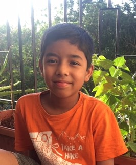

I am
Poojith Jayachander
I am a coder
My Bio
My name is Poojith Jayachander.I was born on 7th October in 2010.My birth place is Mumbai. My age is 10 years. I study in the school vibgyor high. I like to play sports and read history. My hobbies are to play sports,art work,singing,coding and reading history.My surname and my father's name is Jayachander and my mother's name is Devipriya.I live in Banglore and my apartment's name is Sobha Amethyst and Adamus.I also go to an extra class called as WhiteHat Junior where I learn to code on different platforms.I have visited to Delhi,Mysore and many other places.
My Work
My work is to attend online classes properly,to do coding in WhiteHat Junior on new platforms,to help teachers whenever they need me ,completing the given homework on time by the help of the teachers explanations,making my dreams come true by following what to do to accomplish them,not dissapointing my teachers by not doing what they said,to code properly and understand the concepts and formulas whichthe teachers said and maintaining the envirement clean and to make apps.
My Inspiration
My inspiration is my Dad because he is really hardworking and intelligent. He is there whenever I need him. He has taken care of me for over a decade, without him I would not be able to go to school or I wound not be able to do coding also. He is also helping me make my dreams come true so slowly I am able to achieve my dreams. He is the best and I want to be intelligent and hardworking like him. That is why he is my inspiration.

Two more people I like most are Roald Dahl and JK Rowling, famous poets.